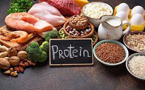
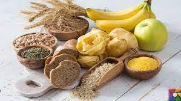
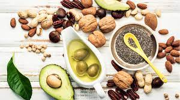
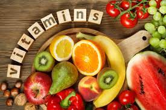

Canlıların yaşamsal faaliyetlerini sürdürebilmesi için yiyecek ve içeceklere yani besinlere ihtiyacı
vardır. Beynimiz, kalbimiz, karaciğerimiz, böbreklerimiz, midemiz ve diğer organlarımız besinler sayesinde çalışır.
Büyüme, gelişme ve sağlıklı yaşamak için
gerekli olan besinleri vücudumuza alarak beslenme
olayını gerçekleştirmiş oluruz. Besinlerin bazılarını
hayvanlardan, bazılarını ise bitkilerden elde ederiz.
Besin içerikleri karbonhidratlar, proteinler,
vitaminler, yağlar, mineraller ve su olmak üzere
beş gruba ayrılır.
PROTEİNLER
Vücudumuzda yapıcı ve onarıcı görev yapan besinler, proteinlerdir. Saçlarımızın ve tırnaklarımızın uzaması proteinler sayesindedir. Kırılan kemiklerimiz de proteinler sayesinde çabucak iyileşir.
Proteinler, vücudun mikroplara karşı savunmasında da görev alan koruyucu maddelerin (antikor) ve bazı vitaminlerin yapımında görev alır. Proteinlerin eksik alınması kadar fazla alımı da zararlıdır. Proteinlerin aşırı alınması durumunda bazı hastalıklar ortaya çıkabilir.
Proteinler, vücudumuzun büyüyüp gelişmesini sağladığı için çok önemlidir. Proteinler, hem hayvansal hem de bitkisel besinlerde bulunur.
Protein İçeren Besinler
Fasulye, nohut, mercimek, bezelye gibi baklagillerde; buğday, yulaf, çavdar, arpa gibi tahıllarda ve fındık, fıstık, badem, ceviz gibi kuru yemişlerde protein bulunur.
KARBONHİDRATLAR
Günlük yaşamımızda koşarız, zıplarız, hoplarız, yürürüz, otururuz, kalkarız. Tüm bunları yapmak için enerjiye ihtiyaç duyarız.
Enerji denince akla gelen ilk besin grubu karbonhidratlardır. Karbonhidratlar, vücudumuzun ihtiyacı olan enerjiyi sağlar. Ayrıca beynimizin kullandığı tek enerji kaynağıdır.
Karbonhidrat içeren besinler vücudun ihtiyaç duyduğu ölçüde tüketilmelidir. Fazla tüketilen karbonhidratlar, vücutta yağa dönüşerek şişmanlamamıza neden olur. Özellikle çocuklar tarafından çok sevilerek tüketilen şekerli besinler diş çürümelerine yol açabilir
Karbonhidrat İçeren Besinler
Buğday, patates, pirinç, mercimek, yulaf karbonhidrat yönünden zengin besin maddeleridir. Ayrıca şeker pancarı, bal, süt, üzüm vb. yiyeceklerde ve kavun, karpuz, şeftali, çilek, kiraz ve muz gibi meyvelerde şeker bulunur. Şekerli yiyecekler karbonhidratlı besinlerdir. Her öğünde bu yiyeceklerden yeterince tüketilmelidir.
YAĞLAR
Yağlar da karbonhidratlar gibi vücudumuzun enerji ihtiyacını karşılar. Uzun süre aç kaldığımızda karbonhidratlardaki enerji yetersiz kalır. Bu durumda enerji ihtiyacımızı yağlardan sağlarız.
Karbonhidratlar gibi yağların da aşırı tüketimi olumsuz sonuçlara yol açabilir. Vücut yağın fazlasını depolar. Depolanan yağlar da fazla kiloya neden olur.
Bazı vitaminlerin vücuda alınabilmesi için besinlerimizde belirli miktarda yağ bulunmalıdır. Soğuk bölgelerde yaşayan canlıların vücutlarını sıcak tutmaları ve hayatta kalmaları, depoladıkları yağlar sayesindedir. Bu yağlar canlıların organlarını dış etkenlere karşı korur.
Yağ İçeren Besinler
Zeytin, ayçiçeği, soya fasulyesi, susam, ceviz ve fındık gibi bitkisel besinlerde bitkisel yağlar vardır. Peynir, tereyağı, kaymak, süt ve balık gibi hayvansal esinler yağ bakımından zengindir.
VİTAMİNLER

Vitaminler, vücudumuzda düzenleyici olarak görev yapar. Organlarımızın düzenli çalışmasını sağlar. Ayrıca vitaminler vücudumuzun direncini arttırarak bizi hastalıklara karşı korur.
Vitaminler bütün besinlerde bulunur. Her gün tüketmemiz gereken meyve ve sebzelerde ise bol miktarda vitamin vardır. Vitaminleri yeteri kadar almazsak vücudumuzun direnci azalır ve hastalanırız.
SU VE MİNERALLER
İnsan vücudunun yaklaşık %70’i sudan oluşur. Vücudumuzun su ihtiyacı su içerek karşılanmalıdır. Bu yüzden günde 7-8 bardak su içmeliyiz. Su vücudumuzun ısısını dengeler, kanı akışkan hale getirir, zararlı maddeleri vücuttan atar ve cildi nemlendirir.

Mineraller ise maden sularında, tuzlarda ve daha birçok besinde bulunur. Kalsiyum, magnezyum, potasyum, sodyum, demir ve fosfor gibi. Minerallerin bir çoğunu yiyeceklerden, içeceklerden ve Güneş’ten sağlarız. Minerallerin vücutta birçok görevi vardır; kemiklerin gelişmesi ve güçlenmesi, kalp ritminin düzenlenmesi, kas ve sinir sistemimizin çalışması bunlardan bazılarıdır.
BESİNLERİN TAZELİĞİ
Sağlıklı bir yaşam için tükettiğimiz besinlerin çeşitliliği kadar taze ve doğal olması da önemlidir. Dalından, toprağından yeni koparılmış, bayatlamamış, bozulmamış olan besinler taze besinlerdir.
Yetiştirilirken herhangi bir ilaçlama yapılmayan, zamanında, mevsiminde tükettiğimiz besinlere doğal besinler diyoruz.
Bazı besinlerin, dondurularak veya paketlenerek daha uzun zaman bozulmaması sağlanabilir. Dondurulmuş besinler çözdürüldükten sonra kullanılmalı tekrar dondurulmamalıdır. Dondurulmuş veya paketlenmiş besinlerin son kullanma tarihine dikkat edilmelidir.
SAĞLIĞA ZARARLI MADDELER
Sigara ve alkol bağımlılığa neden olan alışkanlıklardır. İnsanlar, sigara ve alkol kullanmaya alıştıklarında bunlardan kurtulmakta oldukça zorlanırlar.
Sigara ve zararları
Sigaranın içinde karbonmonoksit, katran, nikotin gibi yaklaşık 4000 tane zararlı madde vardır. Bu maddeler insanı hasta eder. Sigara en çok akciğere zarar verir.
Alkolün Zararları
Alkol bağımlılık yapar. Alkol bağımlılığı bir hastalıktır. Kurtulmak için tedavi görmek gerekir. Alkol en çok karaciğere zarar verir